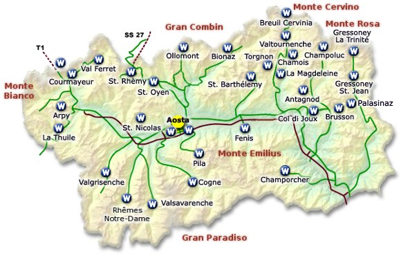
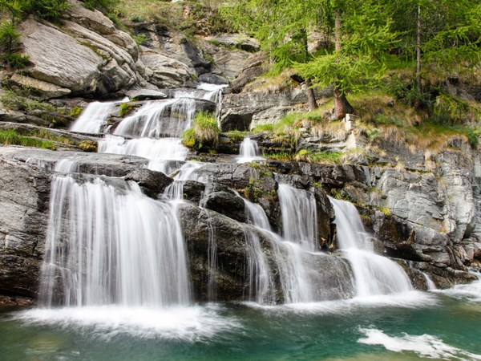

| Nome |
Valle d'Aosta |
| Capoluogo |
Aosta (AO) |
| Data di Istituzione |
1948 |
| Altitudine media |
951 m.s.l.m |
| Superficie |
3261 km^2 |
| Abitanti (luglio 2023) |
122 742 |
| Densità |
38 ab/km^2 |
| Comuni |
74 |
| Province |
Nessuna |
| Confini |
Piemonte, Francia, Svizzera |
| Patrono |
Non pervenuto |
| PIL procapite (2017) |
35.200€ |
Posto da visitare assolutamente: Cascate di Lillaz - Loc. Lillaz, Cogne (AO)
Le Cascate di Lillaz sono una spettacolare cascata situata nel Parco Nazionale
del Gran Paradiso, nelle Alpi italiane.
Queste cascate sono uno dei luoghi naturali più affascinanti della
regione e sono particolarmente conosciute per la loro bellezza e accessibilità.
Ecco alcuni dettagli su di esse:
Formazione:
La cascata è formata dal torrente Grand Eyvia,
che scende dal massiccio del Gran Paradiso.
L'acqua scorre lungo un percorso roccioso ripido,
creando una spettacolare successione di cascate e salti d'acqua.
Altezza:
La cascata principale ha un'altezza di circa 150 metri,
ma l'intero complesso di cascate comprende varie cadute d'acqua su
diversi livelli.
Accessibilità:
Le Cascate di Lillaz sono relativamente accessibili e
sono una meta popolare per gli escursionisti.
È possibile raggiungerle attraverso un sentiero che parte dal parcheggio
di Lillaz.
Il percorso è adatto a diverse fasce di età e offre viste panoramiche
mozzafiato sulla natura circostante.
Stagionalità:
La vista delle Cascate di Lillaz può variare a seconda delle stagioni.
In inverno, le cascate possono ghiacciarsi, creando uno spettacolo di ghiaccio,
mentre in primavera e in estate, con lo scioglimento delle nevi,
l'acqua fluisce abbondante.
Area naturalistica:
La zona intorno alle Cascate di Lillaz è inserita nel Parco Nazionale
del Gran Paradiso, che è noto per la sua ricca flora e fauna alpina.
Durante l'escursione per raggiungere le cascate,
è possibile godere della bellezza del paesaggio montano e,
con un po' di fortuna, avvistare la fauna locale.
Attività ricreative:
Oltre all'escursionismo, la zona offre opportunità per altre attività all'aperto,
come pic-nic, arrampicata e birdwatching.
Le Cascate di Lillaz rappresentano un'attrazione naturale notevole
nel cuore delle Alpi italiane, offrendo ai visitatori la possibilità di
immergersi nella bellezza selvaggia e incontaminata delle montagne.
